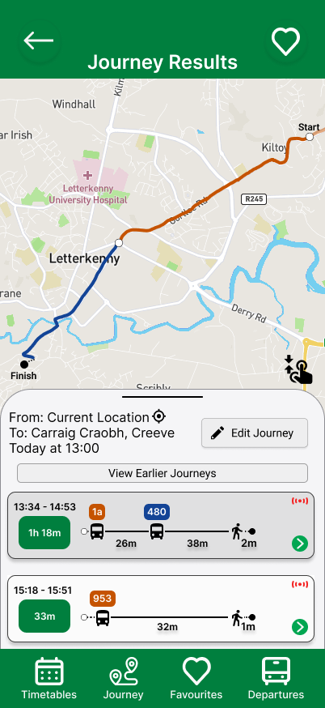
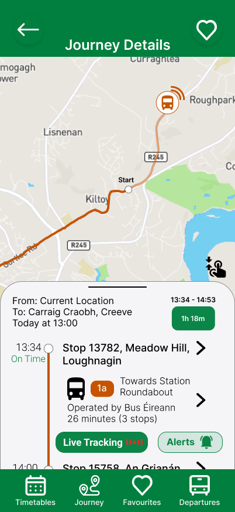

PRODUCT DESIGN • UX RESEARCH
TFI Live Redesign
A research-led redesign of Ireland's public transport app focused on preserving familiar interactions while improving route visualisation, real-time reassurance and journey planning.
View Case Study →